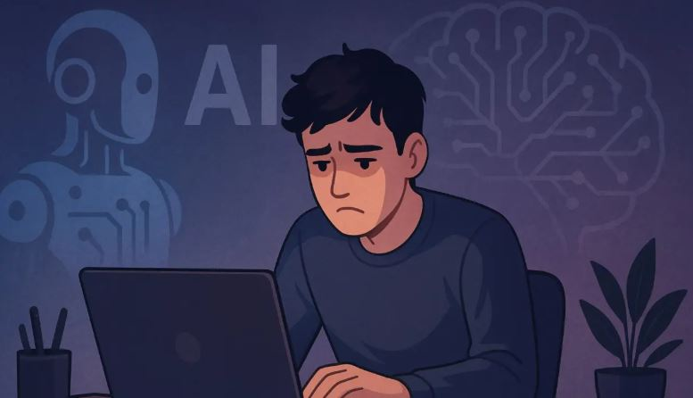

Ser joven y programador ya no garantiza trabajo por culpa de la IA: "Somos la última hornada que se aseguró un puesto"

Durante años, estudiar informática era sinónimo de estabilidad y buenos sueldos; Pero llega la IA para acabar con todo esto y los recién graduados penden de un hilo muy fino.
La llegada de la inteligencia artificial ha puesto patas arriba un sector que parecía intocable; Según un informe de la Universidad de Stanford, muchas tareas que realizaban los programadores recién titulados ya pueden automatizarse con herramientas como ChatGPT; Las empresas lo saben y frenan en seco las contrataciones.
La palabra junior, que antes significaba oportunidad, ahora suena a riesgo o a gasto innecesario y, por lo tanto, comienzan a quedarse atrás quienes acaban de terminar su formación.
En la práctica, eso deja fuera a casi todos los que acaban de terminar la carrera universitaria, atrapados en un círculo vicioso que seguro que suena:
No consigues trabajo sin experiencia, pero no puedes ganar experiencia sin trabajo.